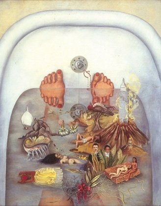

What the Water Gave Me
Frida Kahlo · 1938 · Oil on canvas · 91 × 70.5 cm · Private collection
In copyright. Look and learn: shown for study, not for download.
Kahlo completed this painting in 1938, and it was shown in her first solo exhibition, at the Julien Levy Gallery in New York City, in November of that year. It is sometimes referred to as What I Saw in the Water. It now belongs to the private collection of Daniel Filipacchi, a collector of Surrealist art.